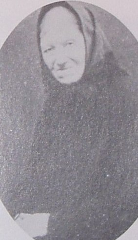

Johannes Bengtsson.

Född 1807 i Nolgård, Klevhult, Skogsbygden (P) 1 .
Död 1859 i Nolgård, Klevhult, Skogsbygden (P) 1 .
|
Född
1807-11-22
i Näs, Skogsbygden (P)
1
.
|
 |
|
Anna Maria Svensdotter
Född 1807-11-22 i Näs, Skogsbygden (P) 1 . |
|||
|
Gift
Johannes Bengtsson.
Född 1807 i Nolgård, Klevhult, Skogsbygden (P) 1 . Död 1859 i Nolgård, Klevhult, Skogsbygden (P) 1 . |
 Född
1836-01-17
i Nolgård, Klevhult, Skogsbygden (P)
1
.
Född
1836-01-17
i Nolgård, Klevhult, Skogsbygden (P)
1
.
Framställd 2026-03-14 med hjälp av Disgen version 2025.